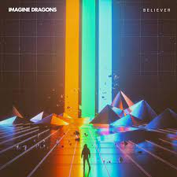
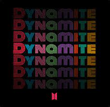
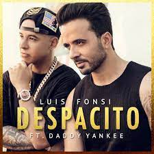

Home
Home
My Fav Songs
I generally like pop musics.
Here is my Fav Songs List
- Shape of You - This was a song by 'Ed Sheeran' that was a hit in the year 2017. It has a veiw count of 3.4 Billion.
It is a very nice song. Especially the background beat is very classy! HEAR THE SONG AND ENJOY!!
The Lyrical Video. 
- Beleiver - This is a song compsed by 'Imagine Dragons' which got a veiw count of 2 Billion Veiws. It gives me energy whenever I hear it! Many remixes were made of this song.
HEAR AND FEEL IT!! The Lyrical Video. 
- Dynamite - This is a Famous song of K-POP Precisely of BTS. This has 1 Billion Veiws. It is a very good song for all time, but especially when you'retravelling or you are sad. It also has registered Many records.
HEAR IT AND BURST THE DYNAMITE OF JOY!! The Lyrical Video 
- Despacito - This was an Era in the app by Louis Fonsi and Daddy Yankee. Though the lyrics are not understable still it's a nice song. It once set the record of most veiwed Video (7.6 Billion). Still we have dubbings of this songs in multiple languages.
HEAR IT AND GET THE DAY HAPPY!! The Lyrical Video